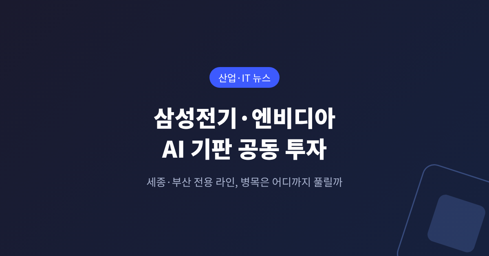
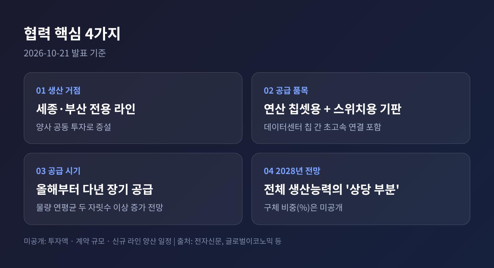
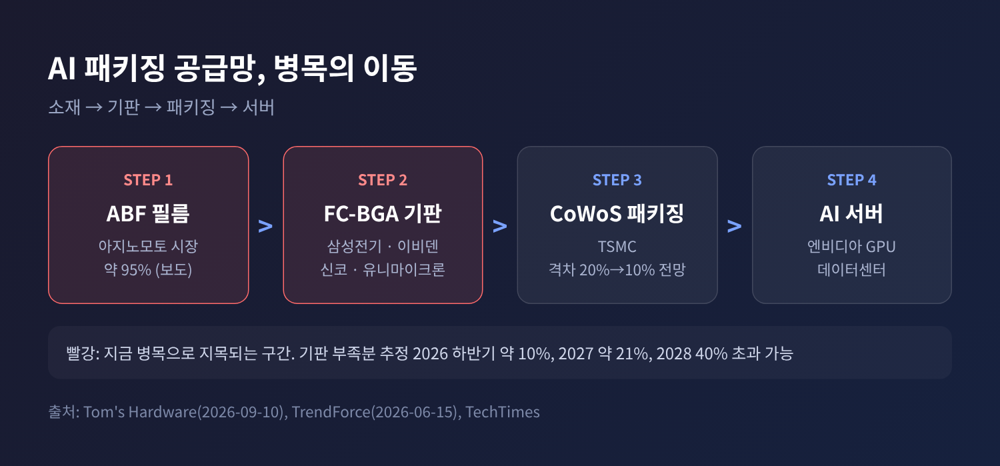
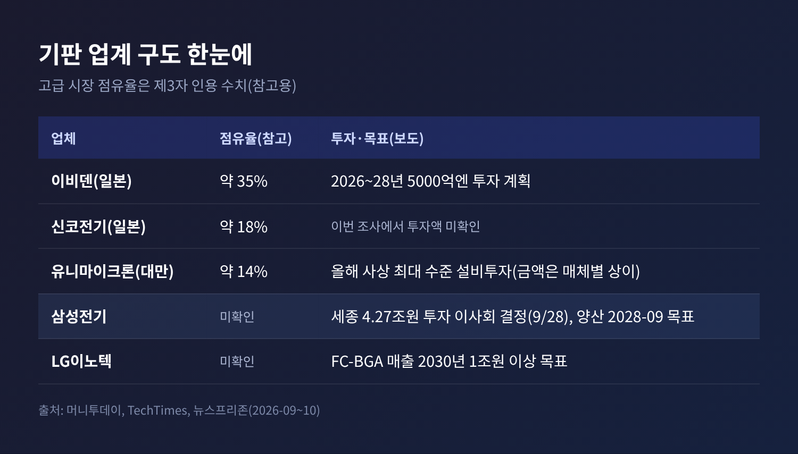
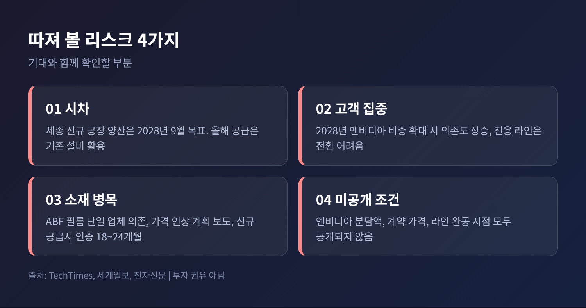

3줄 요약 - 삼성전기가 2026년 10월 21일 엔비디아와 전략적 파트너십을 맺고, 세종·부산에 엔비디아 전용 FC-BGA 기판 라인을 공동 투자로 증설하기로 했습니다. - 올해부터 다년간 공급하며, 2028년에는 엔비디아 물량이 전체 패키지기판 생산능력의 "상당 부분"을 차지할 전망입니다. 투자액과 계약 규모는 공개되지 않았습니다. - 병목이 CoWoS에서 기판, 다시 기판 소재로 옮겨가는 가운데, 이번 협력은 해소의 시작이면서 고객 집중이라는 부담도 함께 안고 있습니다.
이번 글에서는 삼성전기와 엔비디아의 AI 반도체 기판 협력이 무엇인지, 그리고 AI 패키징 공급망에서 어떤 의미를 갖는지 정리해 보겠습니다. 발표된 사실과 확인되지 않은 부분을 구분해 적었습니다.
삼성전기는 10월 21일 엔비디아와 AI 반도체용 패키지기판 공급을 위한 전략적 비즈니스 파트너십을 체결했다고 밝혔습니다. 엔비디아도 독일 베를린 'GTC 2026'에서 젠슨 황 CEO의 기조연설 직후 이를 공식화했습니다.
핵심 내용은 네 가지입니다.

공개되지 않은 것도 분명합니다. 공동 투자 금액, 엔비디아의 분담액, 계약 규모와 가격, 신규 라인의 완공·양산 시점은 어느 보도에도 나오지 않았습니다. 일부 매체가 '수조원대'라는 업계 전언을 소개했지만, 해당 기사 스스로 계약 금액은 비공개라고 밝혔습니다. 이 글에서도 금액은 적지 않습니다.
장덕현 삼성전기 사장은 FC-BGA 경쟁력과 MLCC 기술력을 결합해 "토탈 솔루션 공급자 역할"을 하겠다고 말했습니다. 데보라 쇼퀴스트 엔비디아 운영 담당 부사장은 "AI 인프라 구축 속도에 대응하려면 글로벌 차원의 생산능력 확대가 필요하다"고 밝혔습니다.
AI 가속기는 칩 하나만으로 완성되지 않습니다. GPU와 메모리를 한 패키지에 묶고, 그 패키지를 메인보드에 연결하는 기판이 있어야 합니다. 이 기판이 FC-BGA입니다.
예전엔 병목이 TSMC의 CoWoS 같은 첨단 패키징 공정에 있었습니다. 지금은 기판과 그 소재로 무게가 옮겨가고 있습니다.
TrendForce가 6월에 전한 바로는 CoWoS 수급 격차는 약 20%에서 올해 말 약 10%로 줄어들 것으로 예상됩니다. 2027년부터는 2.5D 패키징 부족이 완화될 것이라는 전망입니다. 기관투자자 전망을 인용한 보도이므로 확정 수치는 아닙니다.
반면 기판은 사정이 다릅니다. Tom's Hardware는 9월 분석에서 ABF 기판의 부족분이 2026년 하반기 약 10%, 2027년 약 21%, 2028년에는 40%를 넘을 수 있다고 추정했습니다. AI용 기판은 기존 제품보다 ABF 소재를 약 10배 쓴다는 아지노모토의 설명도 소개했습니다. 패키지가 커지고 층수가 늘수록 기판 한 장이 먹는 소재와 공정 시간이 불어나기 때문입니다.

그래서 엔비디아의 선택에는 맥락이 있습니다. 전용 라인을 공동 투자로 확보하면 물량을 미리 잡을 수 있습니다. 엔비디아 측도 협력으로 기판 공급 파트너 네트워크를 넓히고 생산능력을 추가로 확보했다고 설명했습니다.
보도에 따르면 이번 협력의 기술 쟁점은 크게 두 가지입니다.
첫째는 수율입니다. 기판 면적과 층수가 늘수록 신호 손실을 막는 초미세 회로를 구현해야 합니다. 열 때문에 기판이 휘는 현상을 억제하는 평탄도 유지 기술도 핵심입니다. Tom's Hardware는 유기 기판이 한 변 약 120mm를 넘으면 평탄도 유지가 어려워진다고 전했습니다. 유리 코어가 대안으로 거론되지만 상용화는 대체로 2027~2030년 이후로 보도됐습니다.
둘째는 MLCC와 실리콘 커패시터를 기판 안에 직접 내장하는 공정입니다. 고속 연산 중 생기는 전력 노이즈를 제어하고 전력 효율을 높이려는 시도입니다. 삼성전기는 MLCC를 직접 만드는 회사라는 점을 강점으로 내세웁니다. 단순 기판 공급을 넘어 통합 솔루션으로 가겠다는 구상입니다.
다만 수율은 말로 증명되지 않습니다. 신규 AI 기판 공급사의 인증에 18~24개월이 걸린다는 보도도 있어, 양산 안정화 속도가 성패를 가를 것입니다.
경쟁 구도도 만만치 않습니다. 머니투데이는 신코전기와 이비덴 등 일본 업체가 엔비디아 고성능 AI 기판 시장을 주도해 왔고, 기술 장벽이 높다고 전했습니다. TechTimes는 고급 시장 점유율을 이비덴 약 35%, 신코 약 18%, 유니마이크론 약 14%로 소개했는데, 제3자 인용 수치여서 참고용으로만 보시길 권합니다.

경쟁사들도 가만히 있지 않습니다. 이비덴은 2026~2028년 5000억엔 투자 계획을 갖고 있고, 유니마이크론은 올해 사상 최대 수준의 설비투자를 집행합니다. 유니마이크론 투자액은 매체마다 수치가 달라 이 글에서는 규모만 언급합니다. LG이노텍은 FC-BGA 매출을 2030년 1조원 이상으로 키우겠다는 목표를 세웠습니다. 뉴스1은 엔비디아가 삼성전자와 SK하이닉스에 이어 삼성전기, LG이노텍에도 손을 내밀며 'K부품' 동맹이 넓어지고 있다고 짚었습니다.
호재만 있는 것은 아닙니다. 확인된 범위에서 짚어 보겠습니다.

시장은 일단 반응했습니다. 뉴스핌에 따르면 22일 오전 9시 24분 기준 삼성전기 주가는 전날보다 3.60% 오른 121만원에 거래됐습니다. 다만 주가는 기대를 먼저 반영하는 경우가 많습니다. 이 글은 투자 권유가 아니며, 투자 판단과 책임은 본인에게 있습니다.
앞으로 확인할 지표는 세 가지입니다.
정리하면 이렇습니다. 이번 협력은 AI 공급망에서 기판이 CoWoS 못지않은 전략 부품이 되었다는 신호입니다. 삼성전기에는 고부가 시장에서 입지를 넓힐 기회이자, 한 고객에 크게 기댈 위험을 안는 선택이기도 합니다.
"병목은 사라지지 않고 자리를 옮긴다." 이 한 줄이 오늘 발표의 의미에 가장 가깝다고 생각합니다.
숫자가 공개되는 날, 이 기대가 얼마나 단단했는지 다시 확인해 볼 수 있을 것입니다.
출처: 글로벌이코노믹·뉴스핌·뉴스1·전자신문·디일렉·머니투데이·세계일보·뉴스프리존(이상 2026-10-21~22), TechTimes(2026-09-28, 10-22), Tom's Hardware(2026-09-10), TrendForce(2026-06-15)